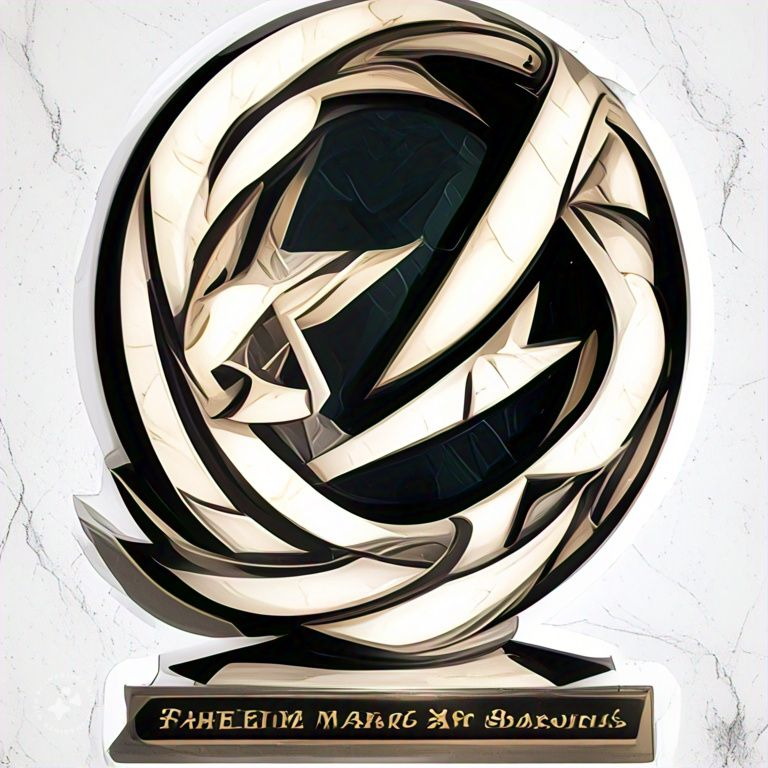

Wellcome To My Website may can i help u ?

ADDRESS : faheem marble & sons saudabad malir karachi
DO you want ?
I have many types of Marble
granite
marble
artficial
Marble is a rock resulting from metamorphism of sedimentary carbonate rocks, most commonly limestone or
dolomite
Metamorphism causes variable re-crystallization of the original carbonate mineral grains. The resulting
marble
rock is typically composed of an interlocking mosaic of carbonate crystals
What kind of marble is found in Pakistan?
Pakistan is home to a wide range of marble and stones, each with its unique properties and uses Some of the
most
popular types of marble and stones found in Pakistan include Black and Gold, Indus Gold, Botticino, Sahara
Gold,
Ziarat Supreme and Verona Beige.